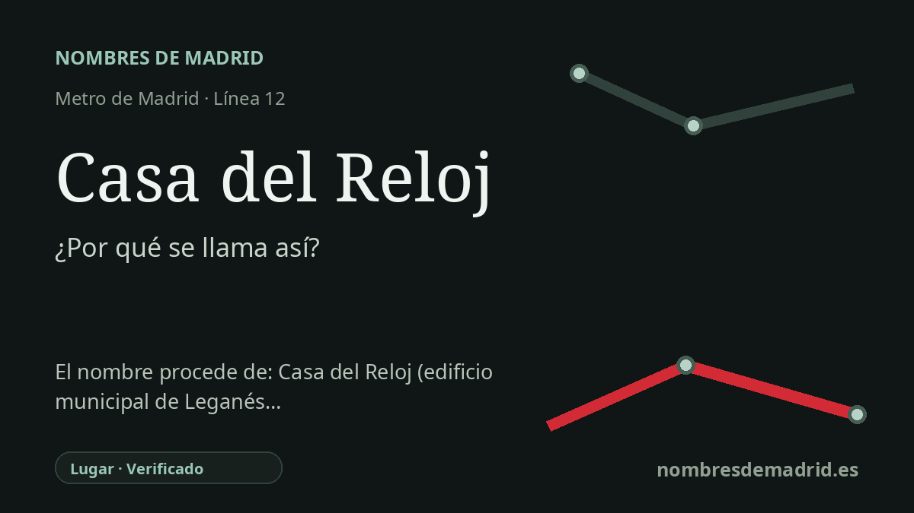

Publicado el · Investigación de Nombres de Madrid · Cómo verificamos cada origen · 7 fuentes consultadas
Respuesta rápida
Casa del Reloj debe su nombre al edificio administrativo del Ayuntamiento de Leganés situado junto a la estación, en la avenida de Gibraltar. El edificio, inaugurado en 1994, es un importante punto de atención municipal y se identifica por el reloj que explica su nombre popular.
La historia del nombre
El nombre Casa del Reloj es local y literal. La estación de Metro está en la avenida de Gibraltar de Leganés, junto al edificio administrativo municipal conocido como Casa del Reloj. La documentación de MetroSur de la Comunidad de Madrid ofrece la etimología más clara: la estación se ubica junto al edificio del Ayuntamiento que le da nombre.
El edificio que está detrás del topónimo no es una casa antigua de la villa ni un hito medieval. Es un edificio municipal de finales del siglo XX utilizado por el Ayuntamiento de Leganés para servicios administrativos, atención a la ciudadanía, información tributaria, registro y otros trámites públicos. Su nombre, “Casa del Reloj”, es una denominación descriptiva vinculada al reloj visible por el que se reconoce el edificio.
La cronología es importante porque muestra que el topónimo existía antes que la estación, aunque es moderno. Una descripción del Archivo Municipal de Leganés publicada en unas jornadas de archivos municipales indica que el nuevo edificio administrativo, la Casa del Reloj, se inauguró en 1994 y que el archivo municipal quedó instalado en su planta sótano. Un anuncio del BOE de 1999 ya habla del “edificio Casa del Reloj” en la avenida de Gibraltar 2, lo que confirma que el nombre estaba en uso administrativo oficial antes de MetroSur.
MetroSur convirtió después ese nombre de edificio en nombre de transporte. La línea 12 se abrió como línea circular de metro para los municipios del sur metropolitano, incluido Leganés, y la estación Casa del Reloj abrió con la línea el 11 de abril de 2003. Los accesos de la estación y el plano zonal del CRTM la sitúan directamente en la avenida de Gibraltar, junto a equipamientos municipales y cívicos como La Cubierta de Leganés y otros servicios públicos cercanos.
No hay pruebas sólidas de una etimología más antigua o competidora. La explicación mejor apoyada es sencilla: la estación recibió el nombre del edificio municipal contiguo, y el edificio se llama así por su reloj. Conviene señalar una pequeña cautela: algunas fuentes secundarias describen la estación como próxima a una urbanización llamada Casa del Reloj, pero la fuente oficial madrileña identifica el elemento que da nombre a la estación como el edificio del Ayuntamiento.